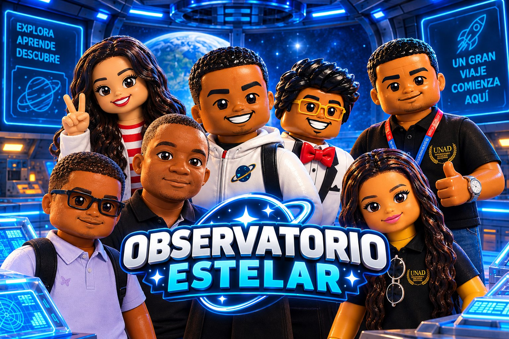

Del primer anteojo al James Webb
Los momentos que hicieron del telescopio la herramienta más importante de la astronomía.
-
1608
Nace el telescopio en Holanda
El fabricante de lentes Hans Lippershey pide una patente por un tubo con dos lentes que hacía ver cerca lo lejano. Es el primer telescopio del que hay registro escrito.
-
1609
Galileo lo apunta al cielo
Galileo Galilei construye su propio telescopio de unos 20 aumentos. En 1610 descubre las cuatro lunas mayores de Júpiter, los cráteres de la Luna y las fases de Venus, y lo publica en su libro Sidereus Nuncius.
-
1611
Kepler mejora el diseño
Johannes Kepler propone usar dos lentes convexas. La imagen sale invertida, pero el campo de visión es más amplio: es la base de los refractores astronómicos, como el nuestro.
-
1668
Newton inventa el reflector
Isaac Newton cambia la lente principal por un espejo curvo. Así elimina los bordes de colores que producían las lentes y abre el camino a los grandes telescopios de espejo.
-
1781
Un planeta nuevo
William Herschel, con un telescopio reflector construido por él mismo, descubre Urano: el primer planeta encontrado con telescopio.
-
1803
Colombia mira al cielo
Se termina el Observatorio Astronómico de Bogotá, impulsado por José Celestino Mutis y dirigido por Francisco José de Caldas. Se le considera el primer observatorio astronómico construido en América.
-
1897
El refractor más grande
El Observatorio Yerkes, en Estados Unidos, estrena un refractor con una lente de 102 cm. Sigue siendo el refractor más grande usado para astronomía: con lentes más grandes, el vidrio se deforma por su propio peso.
-
1924
El universo es más grande
Con el telescopio Hooker de 2,5 metros, Edwin Hubble demuestra que la nebulosa de Andrómeda es otra galaxia. En 1929 muestra que el universo se está expandiendo.
-
1990
Un telescopio en el espacio
El 24 de abril se lanza el Telescopio Espacial Hubble. Por encima de la atmósfera obtiene las imágenes más nítidas de la historia, como las de la Nebulosa de Orión y las Pléyades que ves en nuestra página.
-
2021
El James Webb
El 25 de diciembre despega el Telescopio Espacial James Webb, con un espejo de 6,5 metros hecho de 18 segmentos. Observa en luz infrarroja las primeras galaxias del universo.
-
2026
Nace el Observatorio Estelar en Turbo
La UNAD y el CIP Turbo fundan el Observatorio Estelar para acercar la astronomía a la comunidad de Turbo y del Urabá.
Nuestra historia
Todo gran viaje comienza aquí.

-
2026
El comienzo
El Observatorio Estelar nace en la UNAD y el CIP Turbo con una meta: que el telescopio apunte a las estrellas y que el conocimiento del universo llegue a toda la comunidad.
-
2026
Se forma el equipo
El proyecto se organiza con directores, un liderazgo, desarrollo web e investigadores:
- Prof. Yesid Director del Proyecto
- Prof. Clemente Director Académico
- Taliana Líder del Observatorio
- Adrián Creador de la Web
- Moisés Investigador
- Yilessa Investigadora
- Didier Investigador
-
2026
Nuestro telescopio refractor
El observatorio trabaja con un telescopio refractor, el mismo diseño de lentes que usaron Galileo y Kepler. Es ideal para empezar: muestra con nitidez la Luna, los planetas y las estrellas dobles.
-
2026
La página web y la bitácora
Adrián crea el sitio del observatorio, con el telescopio en 3D, la guía de armado y una bitácora donde todos los compañeros suben las fotos y videos de cada actividad.
Cada noche de observación, taller o salida de campo que subas a la bitácora es un nuevo capítulo.
Ver la bitácora